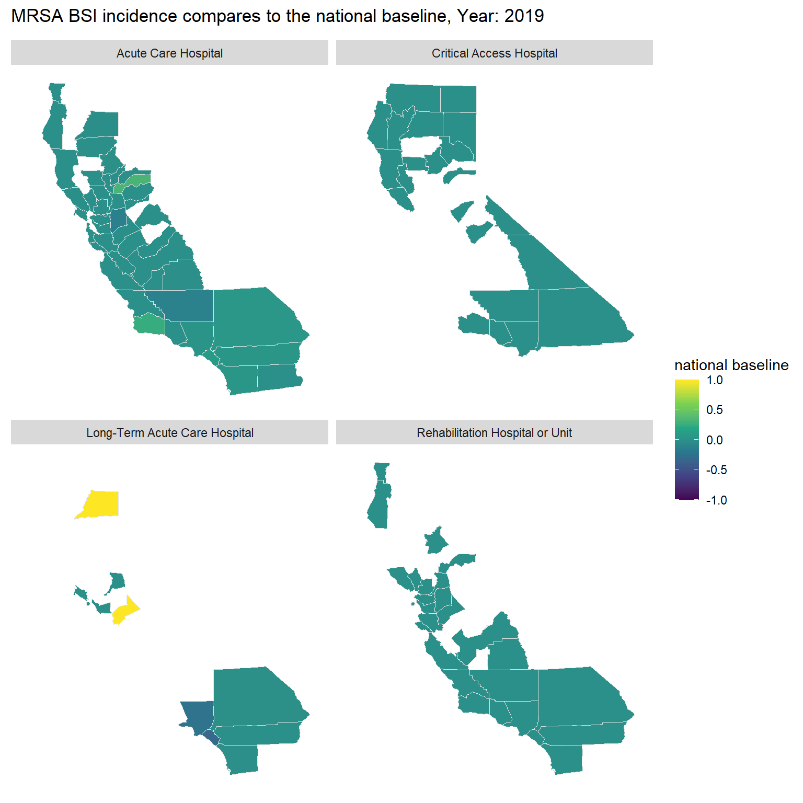

Goal : To demonstrate how to create animated maps with ggplot2 and gganimate in R to track MRSA BSI incidence in the State of California.
Graphs for Communication
Earlier this year, I prepared a presentation for our stakeholders to showcase our business performance, particularly after the lifting of restrictions on large events and gatherings. While we saw overall growth, the performance varied across different locations. One of the key focuses of the presentation was to illustrate how sales at wedding venues and restaurants evolved over time.
To make the data not only accurate but also engaging, I used the ggplot2 and gganimate packages in R. These tools allowed me to transform raw numbers into visually compelling animations, making the data more understandable and impactful for the audience.
This same storytelling approach can be applied to datasets tracking Methicillin-resistant Staphylococcus aureus (MRSA) bloodstream infections (BSI) (BSI) in California Hospitals.
These datasets include 95% confidence intervals for the Standardized Infection Ratio (SIR) and statistical interpretations to compare MRSA BSI incidence against the national baseline. Additionally, the data tracks hospital progress towards national Healthcare-Associated Infection (HAI) reduction goals. Hospitals need to meet or exceed incremental SIR targets each year to stay on track.
In this exercise, we will create an animated map to show whether MRSA BSI incidence in California was the same, better, or worse than the national baseline from 2019 to 2023. The map will use a color scale ranging from purple (-1, indicating worse than the national average) to yellow (1, indicating better than the national average) to depict these comparisons.
Steps
The first section simply loads the libraries and data that will be used.
As gganimate extends the grammar of graphics as implemented by ggplot2 to include the description of animation. Therefore, we will need to generate a base map using ggplot2. Then, add a function of facet_wrap(Hospital_Category_RiskAdjustment) to track the average performance of each hospital category in each county across California.
Step 2
Then, the gganimate library is used to animate the display of color by year (2019 – 2023). Here we define the transition time (in years), add a title and subtitle.
Note: 1. transition_*() defines how the data should be spread out and how it relates to itself across time. 2. The comparison is depicted values and colors range from -1 (purple, worse than the national average) to 1 (yellow, better than the national average).
Code
```{r}#| title: Bloodstream infections (BSI) compare to national overtime#| code-fold: true#| warning: false#| fig-width: 8#| fig-height: 8st <- mrsa_combine|> dplyr::select(subregion, Year, Comparison,Hospital_Category_RiskAdjustment)|> mutate(Year = as.integer(Year))|> group_by(subregion, Year,Hospital_Category_RiskAdjustment)|> summarise(`national baseline` = round(mean(na.omit(as.numeric(Comparison))),2)) st <- left_join(st, unique(us_counties), by= "subregion", relationship = "many-to-many") a <-st|> ggplot(mapping = aes(x = long, y = lat, group = group, fill = `national baseline` ))+ geom_polygon(color = "gray90", linewidth = 0.3) + coord_map(projection = "albers", lat0 = 39, lat1 = 45) + scale_fill_continuous(type = "viridis")+ theme(axis.line=element_blank(), axis.text=element_blank(), axis.ticks=element_blank(), axis.title=element_blank(), panel.background=element_blank(), panel.border=element_blank(), panel.grid=element_blank())+ scale_color_gradient(low = "green", high = "red")+ facet_wrap(~Hospital_Category_RiskAdjustment)a + transition_time(Year) +labs(title = "MRSA BSI incidence compares to the national baseline, Year: {frame_time}")```

Bonus
Also compatible with other ggplot graphs!
In this example we see trend plots of continuous variables infections cases and days of patient hospital stays between 2019 and 2023.
Did you notice the length of patient stay in a hospital is not necessarily positive correlated with numbers of reported cases (except for the acute care hospital category)?